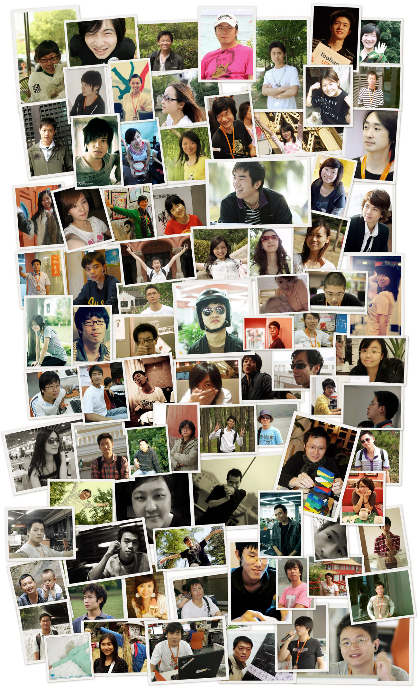

<!DOCTYPE HTML PUBLIC "-//W3C//DTD HTML 4.01 Transitional//EN"
"http://www.w3.org/TR/html4/loose.dtd">
<html xmlns="http://www.w3.org/1999/xhtml">
	<head>
		<meta http-equiv="Content-Type" content="text/html; charset=utf-8" />
<title>放大镜</title>
<script src="js/jquery.js"></script>
<script src="js/fang_da_jing.js"></script>
</head>
<style>
	*{
		padding:0;
		margin:0;
	}
	#the_div
	{
		width:400px;
		border:solid white 2px;
		border-radius:5px;
		margin:0 auto;
		margin-top:50px;
	}
	body{
		background:black;
	}
	.fang_da_jing{
		background:black;
		box-shadow:0 0 5px red;
	}
</style>
<body>
	<div id="the_div">
		
	</div>
	<!--  -->
	
	
</body>
</html>
<script type="text/javascript">
	$(function(){
		var $fdj=$('#the_div').fang_da_jing({
			src:"./img.jpg",//图片路径
			size:50,//默认放大镜尺寸
			use_circle:true,//是否使用圆形放大镜
			max_size:300,//最大放大镜尺寸
			min_size:50,//最小放大镜尺寸
			size_change_step:5,//放大镜尺寸更新步长
			cmds_data_id:"fang_da_jing_cmd_data",
			classes:{
				fang_da_jing:"fang_da_jing"//放大镜所使用的样式
			},
			allow_use_mousewheel:true//是否允许使用鼠标滚轮缩放放大镜
		})
		//console.log($fdj.get_cmds_data());
		$(document).keydown(function(e){
			$fdj.cmds().refresh_fdj_size(e,true);
		})
	})
</script>